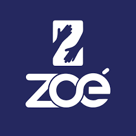

Defendemos a preservação da Amazônia e trabalhamos de forma independente, sem compromissos com agendas empresariais ou políticas. Acreditamos na inclusão de todas as vozes, priorizando a participação de minorias. Nossa atuação é sem fins lucrativos, focada exclusivamente na promoção de nossa missão.